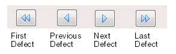

To access: View > Defect Classification
The Defect Classification window contains controls to classify defects generated from a mask inspection.
Refer to “Classifying a Defect”for further information.
A defect that is currently selected in the Defect List or Defect Map is highlighted in the Defect Codes area as a pressed button.
You can navigate to different defects by any of the following methods:
Click a defect in the Defect List or Defect Map. You can classify, add or edit comments, perform switch operations, and confirm classification of a single or multiple defects from this window. Refer to section “Selecting Defects” for details on selecting defects from the Defect List window. For details on selecting defects from the Defect Map window, refer to “Using Rubber Band Selection Mode”.
To navigate to different defects, use the arrow navigation buttons near the bottom of the Defect Classification window.
The classification type of the current defect is highlighted in the Classification Type list as shown in Figure 1.
Once the classification of a defect is classified or confirmed, the tool automatically navigates to the next defect based on defect ID. In the All folder, the Defect Classification window is deactivated if you load different types of inspection files (for example, text files and XML files) at the same time.
Objects |
Description |
|---|---|
Defect code buttons |
Specifies the codes of the Classification Types. Click on an individual button to change the Classification of the defect. |
Classification type list |
Specifies the classification type for the selected defect ID. A list of all possible classification types appears in a menu.
|
Navigation buttons |
Navigates to the first, previous, next, or last defect in the inspection.  |
Confirm |
Confirms the classification of a single defect or set of defects after selecting the defects from the Defect List or Defect Map. See “Classification Confirmation”. |
Comments |
Invokes a Defect Comments dialog box to add comments for the selected defect. See “Editing Defect Comments” |